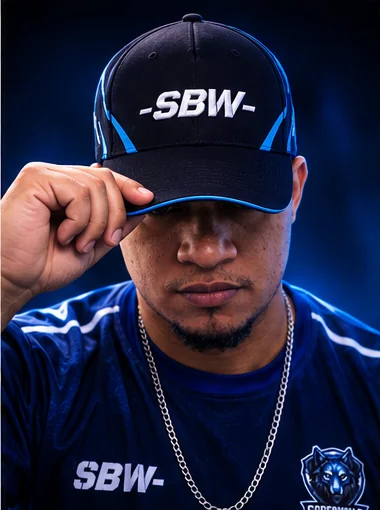

Categoria
Fighting Games / FGC.

Creator e player da -SBW- focado em Fighting Games, conteúdo competitivo, lives, comunidade e desenvolvimento da SaberWolf Esports.
D’Lucca atua como creator e player dentro da SaberWolf, com foco em Fighting Games, conteúdo para a comunidade, lives, projetos competitivos e desenvolvimento da presença da organização no cenário gamer.
Seu conteúdo conecta gameplay, bastidores, torneios, organização de projetos e participação ativa no crescimento da -SBW-.
Fighting Games / FGC.
Creator, player, lives, gameplay, conteúdo competitivo e projetos da organização.
Fundador da SaberWolf Esports e participante ativo no desenvolvimento da organização e de sua comunidade.
Acompanhe as transmissões do D’Lucca: Fighting Games, gameplay e interação com a comunidade.
O player e o chat só serão carregados após sua autorização. Você também pode assistir diretamente na Twitch.